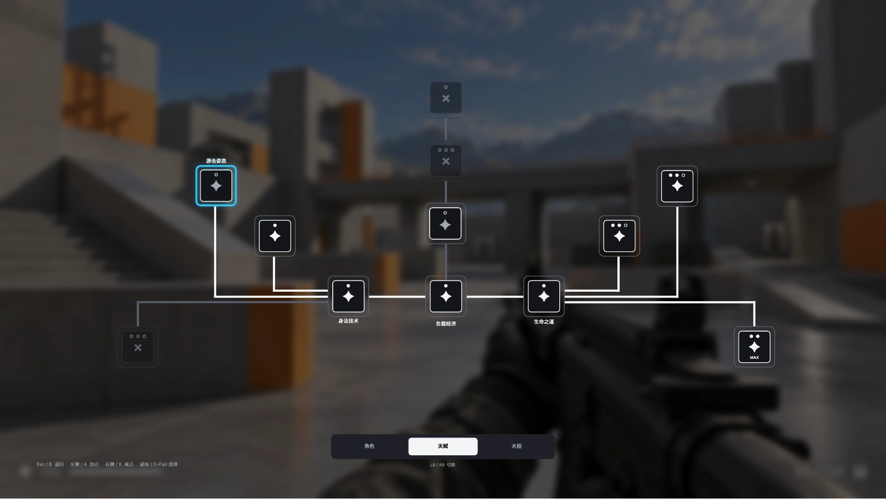
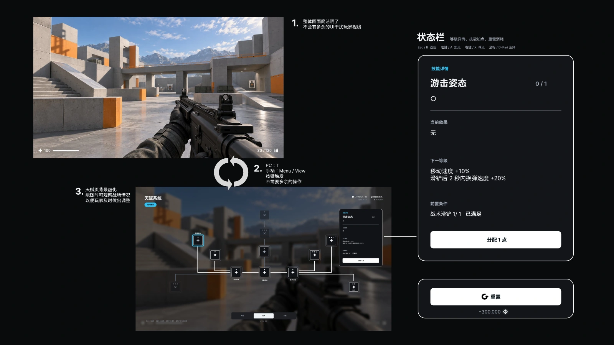
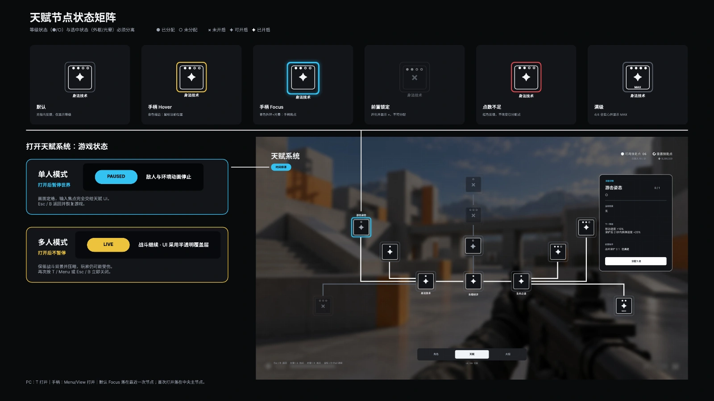
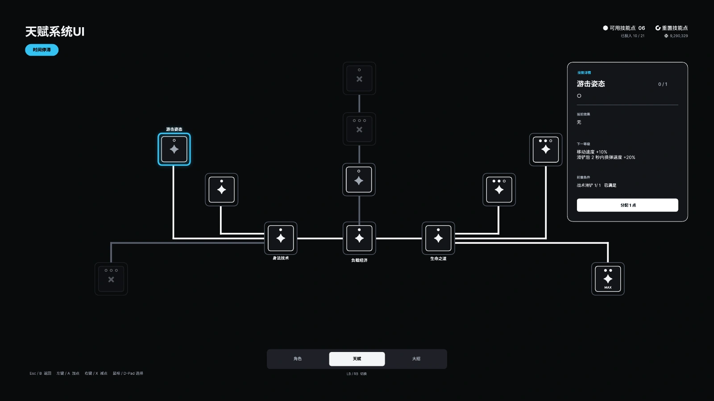
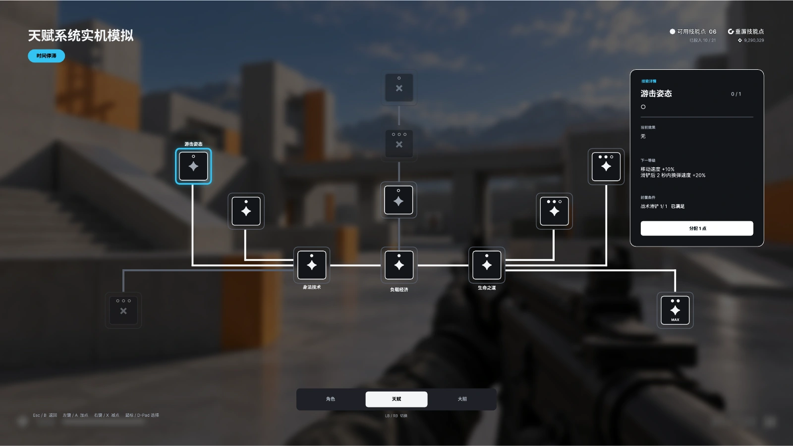

打开系统
- 输入
- PC：T
手柄：Menu / View - 状态与反馈
- 单人模式暂停游戏；多人模式不暂停，仅压暗背景。
- 结果
- 默认焦点落在上次节点；首次打开落在中央主节点。
- 退出
- Esc / B：关闭界面并恢复游戏。
游戏 UI / 双输入交互
FPS TALENT SYSTEM
GAME UI · PC / CONTROLLER
面向 PC 与手柄的 FPS 天赋界面设计。从天赋树与技能详情，到输入反馈、信息架构、加点、保存应用与洗点流程，呈现完整的界面与交互方案。

02 / INTERACTION
打开、浏览、分配：同一套天赋规则，适配鼠标与手柄两种操作方式。
03 / INFORMATION ARCHITECTURE
↓ 从天赋主界面进入二级功能
已学习 / 可点亮 / 前置未满足 / 点数不足
保存 / 覆盖 / 应用差异
费用与返还预览 → 结果
先判断条件，再提交；成功后扣点生效。
战斗中只读；前置未满足时定位前置；点数不足时显示缺口与获取渠道。
资源与当前配置保持不变，可重试。成功后保留焦点，并更新后继节点。
保存免费，应用独立校验。
保存名称为 1–12 字，覆盖须确认。应用时校验前置、总点数与芯片；相同配置不收费。
取消不覆盖，失败不部分应用。保存免费；应用发生移除时消耗 1 枚芯片。
先预览，再确认，再整体更新。
未投入时提示无需重置且不收费；芯片不足时说明缺口与获取渠道。
取消或松开长按保持原方案，服务失败不扣资源。原稿示例：成功后可用 16、投入 0、芯片 1。




以上为 UI 设计与场景模拟展示；场景底图含 AI 生成素材。